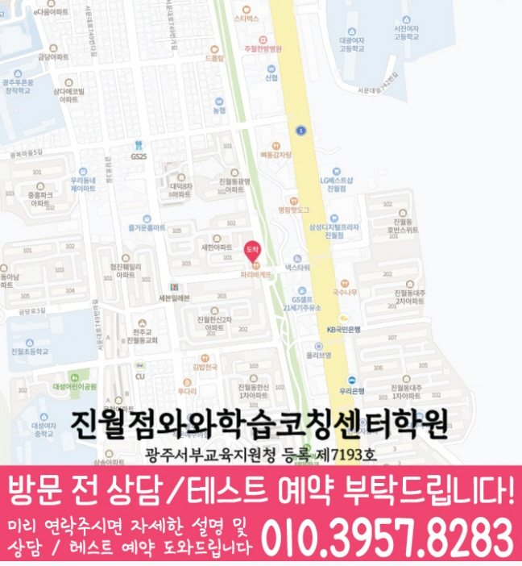

어휘·문법
단어 암기 여부뿐 아니라 시제, 관계대명사, 수동태 등 문법을 문장 안에서 적용하는 습관을 함께 봅니다.
MIDDLE SCHOOL ENGLISH COACHING
광주 남구 진월동 중학생을 위한 중등영어학원 안내입니다. 학교 내신 범위, 서술형 영작, 어휘·문법 관리, 오답 재학습 기준을 상담 전에 확인할 수 있습니다.


와와학습코칭센터 진월점 기준으로 진월동 학생의 중등영어 상담 범위를 확인합니다. 실제 방문·상담 전에는 주소와 이동 동선을 함께 확인해 주세요.
핵심 요약
진월동에서 중등영어를 준비할 때는 점수 자체보다 그 점수가 나온 과정을 먼저 살펴보는 것이 방향을 잡는 데 도움이 됩니다.
단어 암기 여부뿐 아니라 시제, 관계대명사, 수동태 등 문법을 문장 안에서 적용하는 습관을 함께 봅니다.
남구 학교별 교과서 본문과 프린트, 수행평가 일정을 상담 시 함께 확인합니다.
정답 여부만이 아니라 어순과 표현, 독해 오답 원인을 함께 봅니다.
학원 선택 가이드
중학교 영어에서 흔들린 문법은 고등영어에서 더 크게 드러나는 경우가 많습니다. 지금 눈앞의 시험 점수만 보기보다, 다음 단계로 이어질 수 있는 학습 흐름을 함께 봐야 하는 이유입니다.
와와학습코칭센터 진월점은 광주 남구 진월동 학생을 기준으로 상담을 진행합니다. 동성여중, 주월중 재학생은 학교별 진도와 시험 일정에 따른 수업 가능 여부를 상담에서 확인할 수 있습니다. 실제 등록 전에는 광주 남구 광복마을길 47 4층을 기준으로 이동 동선과 상담 가능 시간을 확인하는 것이 좋습니다.
상담은 등록을 결정짓는 자리가 아니라, 지금 아이에게 어떤 관리가 필요한지 함께 찾아보는 시간으로 여겨주시면 좋겠습니다.
AEO ANSWER
중학교 영어와 고등영어는 얼마나 연결되어 있나요?
중학교 문법 체계와 어휘는 고등영어 긴 지문 독해의 기초가 됩니다. 지금 흔들리는 문법 포인트를 방치하면 고등학교에서 더 크게 드러날 수 있습니다.
중학교 영어는 왜 갑자기 어려워질까요?
단어 암기 위주였던 초등 영어와 달리 시제, 관계대명사, 수동태 같은 문법 체계가 본격적으로 늘어나기 때문입니다. 진월동 학생 상담에서는 어느 문법 포인트부터 흔들리기 시작했는지를 먼저 확인합니다.
서술형 영작 때문에 점수가 깎이는 게 걱정된다면?
단어를 나열하는 것과 정확한 문장을 쓰는 것은 다른 훈련이 필요합니다. 채점 기준에 맞춘 어순과 표현을 반복해서 연습합니다.
영어 학원을 고를 때 가장 먼저 확인해야 할 것은?
단어 암기량보다 지금 아이의 상태를 얼마나 구체적으로 진단하고, 그 결과를 어떻게 관리로 연결하는지를 먼저 확인하는 것이 좋습니다.
LOCAL & STUDENT FIT
진월동 생활권 학생의 학교 진도와 시험 일정에 맞춰 중등영어 관리 방향을 상담합니다.
학년별로 필요한 관리가 다르기 때문에 자유학기제, 첫 내신, 고입 대비 시기를 나누어 봅니다.
어휘는 아는데 독해가 느린 학생, 문법을 적용하지 못하는 학생, 서술형에서 감점이 큰 학생에게 적합합니다.
진학 전 초등학교: 진월초, 주월초 · 진학 예정 고등학교: 대광여고, 동성고
수업 가능 학교 참고
일반 학원과의 차이
일반적인 학원 운영 방식과 코칭아카데미의 중등영어 관리 방식을 같은 기준으로 비교했습니다.
CENTER INFO
광주 남구 진월동 학생 상담 기준으로 안내합니다.
광주 남구 광복마을길 47 4층
광주서부교육지원청 등록 제7193호
TUITION
교습비는 학년, 과목, 수업 횟수와 센터의 교육청 신고 내용에 따라 달라질 수 있습니다. 아래 공개 자료 또는 상담을 통해 현재 적용되는 항목과 금액을 확인해 주세요.
와와학습코칭센터 진월점 교습비 확인 안내
공개 자료의 기준일과 과정명, 주당 횟수, 1회 수업 시간을 함께 확인해 주세요. 화면의 안내는 특정 금액을 보장하지 않습니다.
CHECKLIST
진월동 학생이 다니는 학교의 본문 범위와 수행평가 일정을 함께 확인합니다.
다니던 학원이 있었다면 진도와 학습 방식을 확인해 자연스럽게 이어갑니다.
지금 얼마나 앞서 있는지보다, 배우는 문법을 얼마나 정확히 적용하는지를 먼저 봅니다.
본문 진도와 난이도를 확인해 바로 이어서 시작할 수 있는 지점을 잡습니다.
FAQ
그렇습니다. 자유학기제, 첫 내신, 고입 준비처럼 시기마다 필요한 부분이 다르기 때문에 진월동 학생의 학년에 맞춰 우선순위를 다르게 잡습니다.
이 시기에 어휘 기초를 쌓고 문법 개념을 정리해 두면 좋습니다. 진월동 학생도 이때 기본기를 다져두면 다음 학기 내신 대비가 한결 수월해집니다.
학교 교과서 본문과 최근 프린트, 기출 유형을 기준으로 어법, 빈칸, 서술형 영작 순서로 준비합니다. 진월동 학생이 다니는 학교의 변형 문제 스타일을 먼저 확인합니다.
학교별 시험 범위에 맞춰 본문 해설, 어법 정리, 서술형 연습, 실전 테스트 위주로 수업을 다시 구성합니다.
괜찮습니다. 분량이 많았는지 습관 문제인지 먼저 확인하고, 지킬 수 있는 분량으로 조정하며 완료하는 습관을 함께 만들어 갑니다.
학습량이 많았는지, 난이도가 버거웠는지, 성적 부담이 컸는지 원인을 먼저 확인하고 지금 실행 가능한 작은 목표로 다시 시작합니다.
CONSULTATION CASES
아래 내용은 특정 학생의 후기나 성과를 뜻하지 않으며, 상담에서 확인하는 대표적인 학습 상황을 정리한 예시입니다.
오답을 답만 고쳐 두는 학생은 왜 틀렸는지를 짧게 적고 비슷한 문제를 다시 풀어, 같은 실수가 반복되는지 확인합니다.
남구 학교 일정에 맞춘 학습이 필요한 경우에는 시험 범위와 남은 기간을 확인한 뒤, 복습과 문제 풀이의 우선순위를 정합니다.
선행보다 복습이 먼저 필요한 학생은 현재 학년 진도와 이전 단원의 연결 개념을 함께 점검한 뒤 학습 순서를 조정합니다.
진월동 중등영어 상담에서는 최근 점수보다 틀린 문제의 원인을 먼저 나눕니다. 개념 누락, 문제 해석, 계산 실수 가운데 반복되는 지점을 확인합니다.
근처 학원페이지
같은 지역의 다른 과목과, 가까운 지역 페이지로 이동할 수 있도록 정리했습니다.